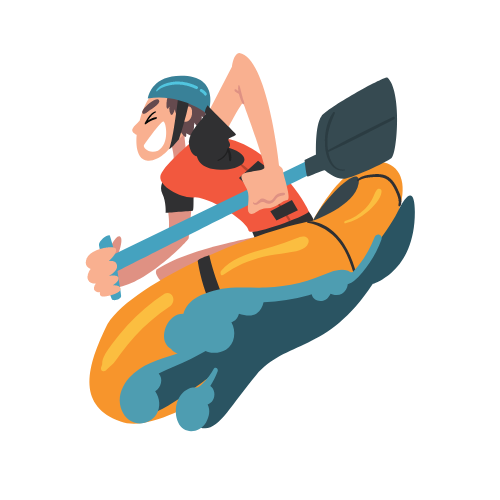

Overview
Purpose
Our mission is to offer a calm or funny paddling service that is an unforgettable experience for the client. To achieve this, it is important for us that the tours are full of beautiful natural environments that allow appreciation, as well as being calm and allowing clients to integrate with nature so that they can find inner peace and a distance from the worries rom work or daily life. Speed rivers to feel adrenaline. We also wish that this sweet time can be appreciated together with family and friends. This is achieved by taking a group tour that encourages the creation of a wonderful family experience or an amazing memory with your most appreciated friends. Our aim is also to keep customers' safety first by using equipment in good condition and choosing paddling routes that are safe.
Audience
Our audience is very broad, encompassing business people, young adults, families whether they include children, teenagers or just married couples, and even seniors. Our age range is from children to older adults, but those who will visit the page will generally be adults. The interests of our clients when acquiring our service are usually that they want to connect with nature, spend family time, and find fun and relaxation on vacation. The financial status of our audience is complete, from people with a good financial status to those who only have a few resources, therefore we provide a complete plan adapted to the needs of the client's budget.
Branding
Website Logo
Style Guide
Color Palette
Palette URL:
"https://coolors.co/50c5de-2b5463-f6952d-fbbf41"| Primary | Secondary | Accent 1 | Accent 2 |
|---|---|---|---|
| #50C5DE | #2B5463 | #F6952D | #FBBF41 |
Typography
Heading Font: Roboto Slab
Paragraph Font: Roboto
Normal paragraph example
The best Whitewater Rafting in Colorado, White Water Rafting Company offers rafting on the Colorado and Roaring Fork Rivers in Glenwood Springs. Since 1974, we have been family owned and operated, rafting the Shoshone section of Glenwood Canyon and beyond.
Colored paragraph example
Trips vary from mild and great for families, to trips exclusively for physically fit and experienced rafters. No matter what type of river adventures you are seeking, White Water Rafting Company can make it happen for you.
Navigation
Site Map
Wireframes
Home